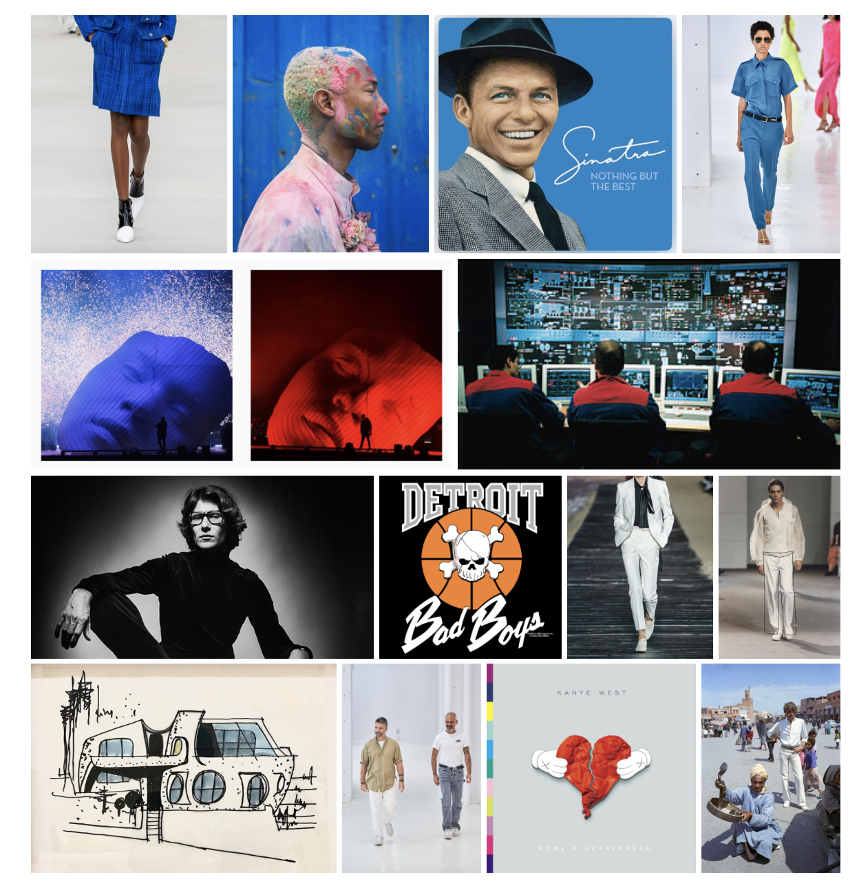
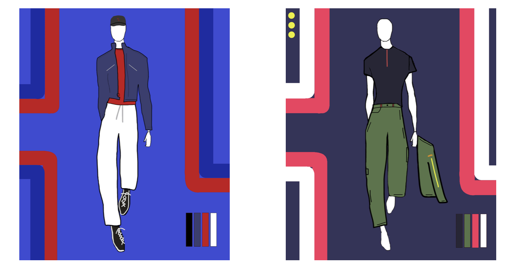
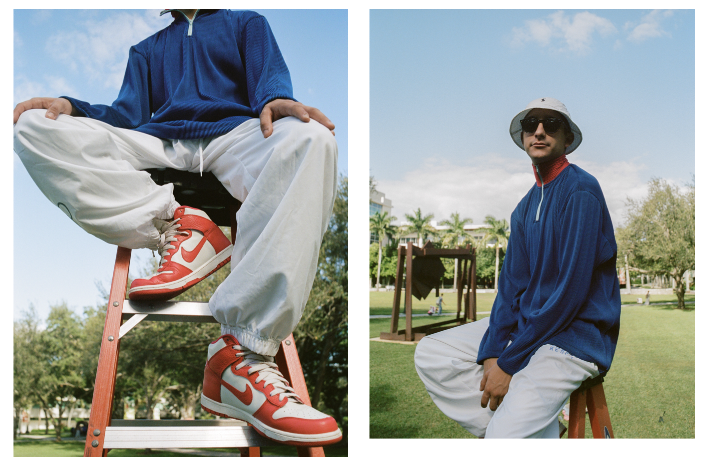

Creative DirectionA creative director determines the creative vision of a brand or project and manifests that vision through digital, print and film installations
"Canonized": A Cinematic Runway Experience representing the use of Earth's natural resources to give identity to old garments


Product DevelopmentFun Fact: My grandfather and uncle had their own sock design/manufacturing companies. I suppose this is where I get my love for product from!
In order to construct a garment, three phases must take place: Moodboarding, Sketching, and Development. I will exhibit a brief showcase of the steps involved in creating a desired look.
Moodboarding
Sketching
Development
PhotographyAbout 90% of these photos were taken on analog film cameras. There is something about the rawness of film photography that draws me to keep shooting.
Art is capturing moments and feeling in time. These photographs are particular moments taken in places all over the world.

About MeI hope my work has inspired you in some way! Here's a little about myself:
Benjamin Smith is a senior at the University of Miami, majoring in Entrepreneurship. Ben's passion for all things authentic, collaborative, and thought provoking has lead him down paths of Fashion Sales, Branding, Advertising, Apparel Production, Media Strategy, and Photography.